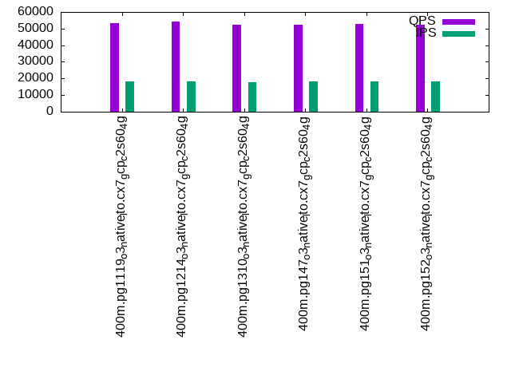

This is a report for the insert benchmark with 400M docs and 20 client(s). It is generated by scripts (bash, awk, sed) and Tufte might not be impressed. An overview of the insert benchmark is here and a short update is here. Below, by DBMS, I mean DBMS+version.config. An example is my8020.c10b40 where my means MySQL, 8020 is version 8.0.20 and c10b40 is the name for the configuration file.
The test server is a c2-standard-60 from GCP with 30 cores, hyperthreading disabled, 240G RAM and 3T from XFS and SW RAID 0 striped over 8 local NVMe drives. The benchmark was run with 20 clients and there were 1 or 2 connections per client (1 for queries, 1 for inserts). The benchmark loads 400M rows without secondary indexes, creates secondary indexes, loads another 400M rows then does 3 read+write tests for one hour each that do queries as fast as possible with 100, 500 and then 1000 writes/second/client concurrent with the queries. Each read-write test runs for 1800 seconds. The test was configured to use a table per client. The database fits in the OS page cache but not the DBMS buffer pool. Clients and the DBMS share one server. The per-database configs are in the per-database subdirectories here.
The tested DBMS are:
The numbers are inserts/s for l.i0 and l.i1, indexed docs (or rows) /s for l.x and queries/s for q*.2. The values are the average rate over the entire test for inserts (IPS) and queries (QPS). The range of values for IPS and QPS is split into 3 parts: bottom 25%, middle 50%, top 25%. Values in the bottom 25% have a red background, values in the top 25% have a green background and values in the middle have no color. A gray background is used for values that can be ignored because the DBMS did not sustain the target insert rate. Red backgrounds are not used when the minimum value is within 80% of the max value.
| dbms | l.i0 | l.x | l.i1 | q100.1 | q500.1 | q1000.1 |
|---|---|---|---|---|---|---|
| 400m.pg1119_o3_native_lto.cx7_gcp_c2s60_4g | 1428571 | 1961274 | 23049 | 109038 | 77910 | 53513 |
| 400m.pg1214_o3_native_lto.cx7_gcp_c2s60_4g | 1408451 | 1990547 | 23214 | 112795 | 80661 | 54110 |
| 400m.pg1310_o3_native_lto.cx7_gcp_c2s60_4g | 1398601 | 1951707 | 23136 | 104165 | 77297 | 52192 |
| 400m.pg147_o3_native_lto.cx7_gcp_c2s60_4g | 1393728 | 1860930 | 23214 | 108297 | 77509 | 52387 |
| 400m.pg151_o3_native_lto.cx7_gcp_c2s60_4g | 1418440 | 1794170 | 23237 | 103673 | 78098 | 52663 |
| 400m.pg152_o3_native_lto.cx7_gcp_c2s60_4g | 1418440 | 1786161 | 23245 | 103293 | 77518 | 52544 |
This lists the average rate of inserts/s for the tests that do inserts concurrent with queries. For such tests the query rate is listed in the table above. The read+write tests are setup so that the insert rate should match the target rate every second. Cells that are not at least 95% of the target have a red background to indicate a failure to satisfy the target.
| dbms | q100.1 | q500.1 | q1000.1 |
|---|---|---|---|
| pg1119_o3_native_lto.cx7_gcp_c2s60_4g | 1976 | 9890 | 18036 |
| pg1214_o3_native_lto.cx7_gcp_c2s60_4g | 1976 | 9885 | 18000 |
| pg1310_o3_native_lto.cx7_gcp_c2s60_4g | 1976 | 9885 | 17973 |
| pg147_o3_native_lto.cx7_gcp_c2s60_4g | 1976 | 9885 | 18063 |
| pg151_o3_native_lto.cx7_gcp_c2s60_4g | 1976 | 9885 | 18118 |
| pg152_o3_native_lto.cx7_gcp_c2s60_4g | 1977 | 9885 | 18109 |
| target | 2000 | 10000 | 20000 |
l.i0: load without secondary indexes. Graphs for performance per 1-second interval are here.
Average throughput:
Insert response time histogram: each cell has the percentage of responses that take <= the time in the header and max is the max response time in seconds. For the max column values in the top 25% of the range have a red background and in the bottom 25% of the range have a green background. The red background is not used when the min value is within 80% of the max value.
| dbms | 256us | 1ms | 4ms | 16ms | 64ms | 256ms | 1s | 4s | 16s | gt | max |
|---|---|---|---|---|---|---|---|---|---|---|---|
| pg1119_o3_native_lto.cx7_gcp_c2s60_4g | 63.091 | 35.848 | 0.970 | 0.046 | 0.034 | 0.011 | 0.450 | ||||
| pg1214_o3_native_lto.cx7_gcp_c2s60_4g | 62.613 | 36.237 | 1.038 | 0.067 | 0.035 | 0.010 | 0.509 | ||||
| pg1310_o3_native_lto.cx7_gcp_c2s60_4g | 61.210 | 37.779 | 0.929 | 0.045 | 0.023 | 0.014 | 0.761 | ||||
| pg147_o3_native_lto.cx7_gcp_c2s60_4g | 61.614 | 37.404 | 0.905 | 0.034 | 0.029 | 0.013 | 0.001 | 1.310 | |||
| pg151_o3_native_lto.cx7_gcp_c2s60_4g | 62.800 | 36.164 | 0.951 | 0.042 | 0.029 | 0.014 | 0.001 | 1.136 | |||
| pg152_o3_native_lto.cx7_gcp_c2s60_4g | 62.805 | 36.181 | 0.937 | 0.035 | 0.026 | 0.016 | 0.967 |
Performance metrics for the DBMS listed above. Some are normalized by throughput, others are not. Legend for results is here.
ips qps rps rmbps wps wmbps rpq rkbpq wpi wkbpi csps cpups cspq cpupq dbgb1 dbgb2 rss maxop p50 p99 tag 1428571 0 54 3.2 10074.9 594.0 0.000 0.002 0.007 0.426 224502 59.8 0.157 13 38.3 103.2 NA 0.450 81410 14384 400m.pg1119_o3_native_lto.cx7_gcp_c2s60_4g 1408451 0 1201 32.0 11058.2 597.8 0.001 0.023 0.008 0.435 216947 59.5 0.154 13 38.3 103.2 NA 0.509 80110 19978 400m.pg1214_o3_native_lto.cx7_gcp_c2s60_4g 1398601 0 610 10.5 9850.6 592.3 0.000 0.008 0.007 0.434 232732 58.6 0.166 13 38.3 103.2 NA 0.761 80013 10089 400m.pg1310_o3_native_lto.cx7_gcp_c2s60_4g 1393728 0 674 7.4 9816.2 593.3 0.000 0.005 0.007 0.436 227440 59.1 0.163 13 38.3 103.2 NA 1.310 79411 8890 400m.pg147_o3_native_lto.cx7_gcp_c2s60_4g 1418440 0 569 6.4 10019.6 598.7 0.000 0.005 0.007 0.432 222244 59.1 0.157 12 38.3 103.2 NA 1.136 81630 8390 400m.pg151_o3_native_lto.cx7_gcp_c2s60_4g 1418440 0 469 6.6 10077.5 603.0 0.000 0.005 0.007 0.435 225438 58.9 0.159 12 38.3 103.2 NA 0.967 81511 8695 400m.pg152_o3_native_lto.cx7_gcp_c2s60_4g
l.x: create secondary indexes.
Average throughput:
Performance metrics for the DBMS listed above. Some are normalized by throughput, others are not. Legend for results is here.
ips qps rps rmbps wps wmbps rpq rkbpq wpi wkbpi csps cpups cspq cpupq dbgb1 dbgb2 rss maxop p50 p99 tag 1961274 0 13878 269.4 5385.8 760.2 0.007 0.141 0.003 0.397 125614 21.6 0.064 3 73.5 176.1 NA 0.454 NA NA 400m.pg1119_o3_native_lto.cx7_gcp_c2s60_4g 1990547 0 13373 296.2 7980.7 735.0 0.007 0.152 0.004 0.378 131468 22.0 0.066 3 73.5 176.6 NA 0.176 NA NA 400m.pg1214_o3_native_lto.cx7_gcp_c2s60_4g 1951707 0 10241 254.1 5909.0 749.2 0.005 0.133 0.003 0.393 125351 21.7 0.064 3 73.5 176.6 NA 0.247 NA NA 400m.pg1310_o3_native_lto.cx7_gcp_c2s60_4g 1860930 0 7108 260.8 5843.4 763.5 0.004 0.143 0.003 0.420 116025 20.5 0.062 3 73.5 190.9 NA 0.387 NA NA 400m.pg147_o3_native_lto.cx7_gcp_c2s60_4g 1794170 0 10907 247.7 5809.0 752.0 0.006 0.141 0.003 0.429 117500 19.7 0.065 3 73.5 193.4 NA 0.156 NA NA 400m.pg151_o3_native_lto.cx7_gcp_c2s60_4g 1786161 0 8844 252.7 5853.6 761.1 0.005 0.145 0.003 0.436 118433 19.8 0.066 3 73.5 193.7 NA 0.597 NA NA 400m.pg152_o3_native_lto.cx7_gcp_c2s60_4g
l.i1: continue load after secondary indexes created. Graphs for performance per 1-second interval are here.
Average throughput:
Insert response time histogram: each cell has the percentage of responses that take <= the time in the header and max is the max response time in seconds. For the max column values in the top 25% of the range have a red background and in the bottom 25% of the range have a green background. The red background is not used when the min value is within 80% of the max value.
| dbms | 256us | 1ms | 4ms | 16ms | 64ms | 256ms | 1s | 4s | 16s | gt | max |
|---|---|---|---|---|---|---|---|---|---|---|---|
| pg1119_o3_native_lto.cx7_gcp_c2s60_4g | 0.014 | 88.351 | 11.631 | 0.004 | 0.368 | ||||||
| pg1214_o3_native_lto.cx7_gcp_c2s60_4g | 0.021 | 88.552 | 11.423 | 0.003 | 0.411 | ||||||
| pg1310_o3_native_lto.cx7_gcp_c2s60_4g | 0.005 | 88.408 | 11.583 | 0.004 | 0.408 | ||||||
| pg147_o3_native_lto.cx7_gcp_c2s60_4g | 0.016 | 88.550 | 11.430 | 0.004 | 0.411 | ||||||
| pg151_o3_native_lto.cx7_gcp_c2s60_4g | 0.010 | 88.628 | 11.358 | 0.004 | 0.467 | ||||||
| pg152_o3_native_lto.cx7_gcp_c2s60_4g | 0.015 | 88.649 | 11.332 | 0.004 | 0.545 |
Performance metrics for the DBMS listed above. Some are normalized by throughput, others are not. Legend for results is here.
ips qps rps rmbps wps wmbps rpq rkbpq wpi wkbpi csps cpups cspq cpupq dbgb1 dbgb2 rss maxop p50 p99 tag 23049 0 70546 728.7 62723.6 605.9 3.061 32.373 2.721 26.917 133167 12.1 5.777 157 165.8 246.1 0.0 0.368 1199 599 400m.pg1119_o3_native_lto.cx7_gcp_c2s60_4g 23214 0 70200 726.8 63027.7 607.0 3.024 32.061 2.715 26.777 133977 11.9 5.771 154 163.1 240.8 0.0 0.411 1199 599 400m.pg1214_o3_native_lto.cx7_gcp_c2s60_4g 23136 0 70042 725.7 62796.7 607.2 3.027 32.119 2.714 26.874 134068 11.9 5.795 154 163.3 242.0 0.0 0.408 1199 599 400m.pg1310_o3_native_lto.cx7_gcp_c2s60_4g 23214 0 70190 722.2 63026.9 600.5 3.024 31.857 2.715 26.488 132756 11.9 5.719 154 163.3 259.4 0.0 0.411 1199 599 400m.pg147_o3_native_lto.cx7_gcp_c2s60_4g 23237 0 70603 727.2 63088.8 601.2 3.038 32.045 2.715 26.493 132829 11.8 5.716 152 163.3 258.6 NA 0.467 1199 600 400m.pg151_o3_native_lto.cx7_gcp_c2s60_4g 23245 0 70377 724.9 63078.2 601.3 3.028 31.933 2.714 26.487 132716 11.8 5.709 152 163.3 257.9 NA 0.545 1199 599 400m.pg152_o3_native_lto.cx7_gcp_c2s60_4g
q100.1: range queries with 100 insert/s per client. Graphs for performance per 1-second interval are here.
Average throughput:
Query response time histogram: each cell has the percentage of responses that take <= the time in the header and max is the max response time in seconds. For max values in the top 25% of the range have a red background and in the bottom 25% of the range have a green background. The red background is not used when the min value is within 80% of the max value.
| dbms | 256us | 1ms | 4ms | 16ms | 64ms | 256ms | 1s | 4s | 16s | gt | max |
|---|---|---|---|---|---|---|---|---|---|---|---|
| pg1119_o3_native_lto.cx7_gcp_c2s60_4g | 69.977 | 29.838 | 0.179 | 0.006 | nonzero | 0.060 | |||||
| pg1214_o3_native_lto.cx7_gcp_c2s60_4g | 71.395 | 28.418 | 0.182 | 0.004 | nonzero | nonzero | 0.113 | ||||
| pg1310_o3_native_lto.cx7_gcp_c2s60_4g | 67.809 | 31.951 | 0.234 | 0.006 | nonzero | 0.056 | |||||
| pg147_o3_native_lto.cx7_gcp_c2s60_4g | 69.633 | 30.132 | 0.230 | 0.005 | nonzero | nonzero | 0.234 | ||||
| pg151_o3_native_lto.cx7_gcp_c2s60_4g | 67.554 | 32.194 | 0.246 | 0.005 | nonzero | nonzero | 0.178 | ||||
| pg152_o3_native_lto.cx7_gcp_c2s60_4g | 67.457 | 32.292 | 0.244 | 0.006 | nonzero | nonzero | 0.182 |
Insert response time histogram: each cell has the percentage of responses that take <= the time in the header and max is the max response time in seconds. For max values in the top 25% of the range have a red background and in the bottom 25% of the range have a green background. The red background is not used when the min value is within 80% of the max value.
| dbms | 256us | 1ms | 4ms | 16ms | 64ms | 256ms | 1s | 4s | 16s | gt | max |
|---|---|---|---|---|---|---|---|---|---|---|---|
| pg1119_o3_native_lto.cx7_gcp_c2s60_4g | 0.011 | 98.931 | 1.058 | 0.123 | |||||||
| pg1214_o3_native_lto.cx7_gcp_c2s60_4g | 0.025 | 99.975 | 0.062 | ||||||||
| pg1310_o3_native_lto.cx7_gcp_c2s60_4g | 0.014 | 99.911 | 0.075 | 0.107 | |||||||
| pg147_o3_native_lto.cx7_gcp_c2s60_4g | 0.015 | 99.858 | 0.106 | 0.021 | 0.376 | ||||||
| pg151_o3_native_lto.cx7_gcp_c2s60_4g | 0.004 | 99.896 | 0.099 | 0.001 | 0.473 | ||||||
| pg152_o3_native_lto.cx7_gcp_c2s60_4g | 0.021 | 99.864 | 0.110 | 0.006 | 0.304 |
Performance metrics for the DBMS listed above. Some are normalized by throughput, others are not. Legend for results is here.
ips qps rps rmbps wps wmbps rpq rkbpq wpi wkbpi csps cpups cspq cpupq dbgb1 dbgb2 rss maxop p50 p99 tag 1976 109038 76296 734.4 6276.4 74.4 0.700 6.897 3.177 38.566 495053 40.3 4.540 111 166.6 262.7 0.0 0.060 5580 4923 400m.pg1119_o3_native_lto.cx7_gcp_c2s60_4g 1976 112795 78618 758.9 6246.7 72.0 0.697 6.890 3.162 37.323 510081 39.7 4.522 106 163.6 235.4 0.0 0.113 5676 5146 400m.pg1214_o3_native_lto.cx7_gcp_c2s60_4g 1976 104165 91165 782.2 6321.9 71.2 0.875 7.690 3.200 36.909 486847 36.2 4.674 104 163.9 220.8 0.0 0.056 5274 4653 400m.pg1310_o3_native_lto.cx7_gcp_c2s60_4g 1976 108297 81146 788.0 6348.6 72.6 0.749 7.451 3.213 37.613 497635 38.1 4.595 106 163.9 234.6 0.0 0.234 5527 4765 400m.pg147_o3_native_lto.cx7_gcp_c2s60_4g 1976 103673 91287 779.2 6354.0 72.2 0.881 7.696 3.216 37.409 484610 36.2 4.674 105 163.9 233.7 0.0 0.178 5258 4667 400m.pg151_o3_native_lto.cx7_gcp_c2s60_4g 1977 103293 91227 778.3 6342.2 72.2 0.883 7.715 3.208 37.422 482723 36.2 4.673 105 163.9 233.1 0.0 0.182 5306 4651 400m.pg152_o3_native_lto.cx7_gcp_c2s60_4g
q500.1: range queries with 500 insert/s per client. Graphs for performance per 1-second interval are here.
Average throughput:
Query response time histogram: each cell has the percentage of responses that take <= the time in the header and max is the max response time in seconds. For max values in the top 25% of the range have a red background and in the bottom 25% of the range have a green background. The red background is not used when the min value is within 80% of the max value.
| dbms | 256us | 1ms | 4ms | 16ms | 64ms | 256ms | 1s | 4s | 16s | gt | max |
|---|---|---|---|---|---|---|---|---|---|---|---|
| pg1119_o3_native_lto.cx7_gcp_c2s60_4g | 60.551 | 38.066 | 1.254 | 0.123 | 0.006 | 0.056 | |||||
| pg1214_o3_native_lto.cx7_gcp_c2s60_4g | 62.309 | 36.334 | 1.236 | 0.116 | 0.005 | 0.056 | |||||
| pg1310_o3_native_lto.cx7_gcp_c2s60_4g | 60.629 | 37.757 | 1.475 | 0.132 | 0.006 | 0.050 | |||||
| pg147_o3_native_lto.cx7_gcp_c2s60_4g | 60.789 | 37.633 | 1.446 | 0.126 | 0.006 | nonzero | 0.128 | ||||
| pg151_o3_native_lto.cx7_gcp_c2s60_4g | 61.129 | 37.305 | 1.435 | 0.125 | 0.006 | nonzero | 0.081 | ||||
| pg152_o3_native_lto.cx7_gcp_c2s60_4g | 60.720 | 37.717 | 1.433 | 0.125 | 0.005 | nonzero | 0.186 |
Insert response time histogram: each cell has the percentage of responses that take <= the time in the header and max is the max response time in seconds. For max values in the top 25% of the range have a red background and in the bottom 25% of the range have a green background. The red background is not used when the min value is within 80% of the max value.
| dbms | 256us | 1ms | 4ms | 16ms | 64ms | 256ms | 1s | 4s | 16s | gt | max |
|---|---|---|---|---|---|---|---|---|---|---|---|
| pg1119_o3_native_lto.cx7_gcp_c2s60_4g | 0.002 | 92.072 | 7.926 | 0.244 | |||||||
| pg1214_o3_native_lto.cx7_gcp_c2s60_4g | 0.011 | 92.496 | 7.493 | 0.001 | 0.280 | ||||||
| pg1310_o3_native_lto.cx7_gcp_c2s60_4g | 0.007 | 91.724 | 8.269 | nonzero | 0.305 | ||||||
| pg147_o3_native_lto.cx7_gcp_c2s60_4g | 0.004 | 92.297 | 7.698 | nonzero | 0.272 | ||||||
| pg151_o3_native_lto.cx7_gcp_c2s60_4g | 0.007 | 92.189 | 7.803 | nonzero | 0.270 | ||||||
| pg152_o3_native_lto.cx7_gcp_c2s60_4g | 0.006 | 92.328 | 7.665 | 0.001 | 0.266 |
Performance metrics for the DBMS listed above. Some are normalized by throughput, others are not. Legend for results is here.
ips qps rps rmbps wps wmbps rpq rkbpq wpi wkbpi csps cpups cspq cpupq dbgb1 dbgb2 rss maxop p50 p99 tag 9890 77910 93006 876.1 29470.3 306.4 1.194 11.514 2.980 31.728 418763 37.5 5.375 144 171.6 246.9 0.0 0.056 4109 2030 400m.pg1119_o3_native_lto.cx7_gcp_c2s60_4g 9885 80661 95005 896.3 29185.3 303.1 1.178 11.379 2.953 31.399 428360 37.0 5.311 138 167.1 230.5 0.0 0.056 4267 2108 400m.pg1214_o3_native_lto.cx7_gcp_c2s60_4g 9885 77297 97424 923.7 29206.8 308.8 1.260 12.237 2.955 31.988 420631 35.4 5.442 137 167.4 226.0 0.0 0.050 4107 1997 400m.pg1310_o3_native_lto.cx7_gcp_c2s60_4g 9885 77509 96098 909.0 29212.7 306.7 1.240 12.010 2.955 31.776 420603 35.7 5.427 138 167.4 236.7 NA 0.128 4123 1935 400m.pg147_o3_native_lto.cx7_gcp_c2s60_4g 9885 78098 95598 915.2 29129.0 306.7 1.224 11.999 2.947 31.773 422199 35.6 5.406 137 167.5 236.7 0.0 0.081 4141 1982 400m.pg151_o3_native_lto.cx7_gcp_c2s60_4g 9885 77518 96294 900.6 29292.6 307.5 1.242 11.897 2.963 31.853 420705 35.7 5.427 138 167.4 236.7 0.0 0.186 4093 1982 400m.pg152_o3_native_lto.cx7_gcp_c2s60_4g
q1000.1: range queries with 1000 insert/s per client. Graphs for performance per 1-second interval are here.
Average throughput:
Query response time histogram: each cell has the percentage of responses that take <= the time in the header and max is the max response time in seconds. For max values in the top 25% of the range have a red background and in the bottom 25% of the range have a green background. The red background is not used when the min value is within 80% of the max value.
| dbms | 256us | 1ms | 4ms | 16ms | 64ms | 256ms | 1s | 4s | 16s | gt | max |
|---|---|---|---|---|---|---|---|---|---|---|---|
| pg1119_o3_native_lto.cx7_gcp_c2s60_4g | 54.014 | 42.158 | 3.247 | 0.542 | 0.037 | nonzero | 0.082 | ||||
| pg1214_o3_native_lto.cx7_gcp_c2s60_4g | 54.862 | 41.216 | 3.322 | 0.563 | 0.037 | nonzero | 0.162 | ||||
| pg1310_o3_native_lto.cx7_gcp_c2s60_4g | 53.576 | 41.971 | 3.824 | 0.589 | 0.041 | nonzero | 0.187 | ||||
| pg147_o3_native_lto.cx7_gcp_c2s60_4g | 53.491 | 42.089 | 3.816 | 0.565 | 0.038 | nonzero | 0.100 | ||||
| pg151_o3_native_lto.cx7_gcp_c2s60_4g | 53.840 | 41.803 | 3.752 | 0.566 | 0.039 | nonzero | 0.076 | ||||
| pg152_o3_native_lto.cx7_gcp_c2s60_4g | 53.814 | 41.812 | 3.768 | 0.569 | 0.038 | nonzero | 0.085 |
Insert response time histogram: each cell has the percentage of responses that take <= the time in the header and max is the max response time in seconds. For max values in the top 25% of the range have a red background and in the bottom 25% of the range have a green background. The red background is not used when the min value is within 80% of the max value.
| dbms | 256us | 1ms | 4ms | 16ms | 64ms | 256ms | 1s | 4s | 16s | gt | max |
|---|---|---|---|---|---|---|---|---|---|---|---|
| pg1119_o3_native_lto.cx7_gcp_c2s60_4g | 0.004 | 82.769 | 17.226 | 0.001 | 0.276 | ||||||
| pg1214_o3_native_lto.cx7_gcp_c2s60_4g | 0.018 | 82.556 | 17.424 | 0.001 | 0.296 | ||||||
| pg1310_o3_native_lto.cx7_gcp_c2s60_4g | 0.001 | 82.416 | 17.581 | 0.002 | 0.577 | ||||||
| pg147_o3_native_lto.cx7_gcp_c2s60_4g | 0.002 | 82.686 | 17.312 | 0.001 | 0.277 | ||||||
| pg151_o3_native_lto.cx7_gcp_c2s60_4g | 0.008 | 82.760 | 17.232 | nonzero | 0.284 | ||||||
| pg152_o3_native_lto.cx7_gcp_c2s60_4g | 0.007 | 82.874 | 17.118 | 0.001 | 0.305 |
Performance metrics for the DBMS listed above. Some are normalized by throughput, others are not. Legend for results is here.
ips qps rps rmbps wps wmbps rpq rkbpq wpi wkbpi csps cpups cspq cpupq dbgb1 dbgb2 rss maxop p50 p99 tag 18036 53513 95405 933.1 51992.9 528.2 1.783 17.855 2.883 29.987 366499 37.4 6.849 210 185.4 262.1 0.0 0.082 2797 1455 400m.pg1119_o3_native_lto.cx7_gcp_c2s60_4g 18000 54110 96553 938.9 51514.4 539.1 1.784 17.768 2.862 30.670 368878 36.4 6.817 202 179.3 257.4 0.0 0.162 2829 1518 400m.pg1214_o3_native_lto.cx7_gcp_c2s60_4g 17973 52192 97678 953.8 51515.2 539.7 1.872 18.713 2.866 30.746 365959 35.2 7.012 202 179.6 257.4 0.0 0.187 2733 1422 400m.pg1310_o3_native_lto.cx7_gcp_c2s60_4g 18063 52387 98852 961.4 51571.5 527.9 1.887 18.792 2.855 29.925 367587 35.6 7.017 204 179.6 272.2 0.0 0.100 2734 1423 400m.pg147_o3_native_lto.cx7_gcp_c2s60_4g 18118 52663 97753 956.4 51795.2 530.2 1.856 18.597 2.859 29.967 368048 35.4 6.989 202 179.6 272.2 0.0 0.076 2765 1422 400m.pg151_o3_native_lto.cx7_gcp_c2s60_4g 18109 52544 97400 952.5 51885.2 530.8 1.854 18.562 2.865 30.015 367308 35.6 6.990 203 179.6 272.3 0.0 0.085 2750 1439 400m.pg152_o3_native_lto.cx7_gcp_c2s60_4g
l.i0: load without secondary indexes
Performance metrics for all DBMS, not just the ones listed above. Some are normalized by throughput, others are not. Legend for results is here.
ips qps rps rmbps wps wmbps rpq rkbpq wpi wkbpi csps cpups cspq cpupq dbgb1 dbgb2 rss maxop p50 p99 tag 1428571 0 54 3.2 10074.9 594.0 0.000 0.002 0.007 0.426 224502 59.8 0.157 13 38.3 103.2 NA 0.450 81410 14384 400m.pg1119_o3_native_lto.cx7_gcp_c2s60_4g 1408451 0 1201 32.0 11058.2 597.8 0.001 0.023 0.008 0.435 216947 59.5 0.154 13 38.3 103.2 NA 0.509 80110 19978 400m.pg1214_o3_native_lto.cx7_gcp_c2s60_4g 1398601 0 610 10.5 9850.6 592.3 0.000 0.008 0.007 0.434 232732 58.6 0.166 13 38.3 103.2 NA 0.761 80013 10089 400m.pg1310_o3_native_lto.cx7_gcp_c2s60_4g 1393728 0 674 7.4 9816.2 593.3 0.000 0.005 0.007 0.436 227440 59.1 0.163 13 38.3 103.2 NA 1.310 79411 8890 400m.pg147_o3_native_lto.cx7_gcp_c2s60_4g 1418440 0 569 6.4 10019.6 598.7 0.000 0.005 0.007 0.432 222244 59.1 0.157 12 38.3 103.2 NA 1.136 81630 8390 400m.pg151_o3_native_lto.cx7_gcp_c2s60_4g 1418440 0 469 6.6 10077.5 603.0 0.000 0.005 0.007 0.435 225438 58.9 0.159 12 38.3 103.2 NA 0.967 81511 8695 400m.pg152_o3_native_lto.cx7_gcp_c2s60_4g
l.x: create secondary indexes
Performance metrics for all DBMS, not just the ones listed above. Some are normalized by throughput, others are not. Legend for results is here.
ips qps rps rmbps wps wmbps rpq rkbpq wpi wkbpi csps cpups cspq cpupq dbgb1 dbgb2 rss maxop p50 p99 tag 1961274 0 13878 269.4 5385.8 760.2 0.007 0.141 0.003 0.397 125614 21.6 0.064 3 73.5 176.1 NA 0.454 NA NA 400m.pg1119_o3_native_lto.cx7_gcp_c2s60_4g 1990547 0 13373 296.2 7980.7 735.0 0.007 0.152 0.004 0.378 131468 22.0 0.066 3 73.5 176.6 NA 0.176 NA NA 400m.pg1214_o3_native_lto.cx7_gcp_c2s60_4g 1951707 0 10241 254.1 5909.0 749.2 0.005 0.133 0.003 0.393 125351 21.7 0.064 3 73.5 176.6 NA 0.247 NA NA 400m.pg1310_o3_native_lto.cx7_gcp_c2s60_4g 1860930 0 7108 260.8 5843.4 763.5 0.004 0.143 0.003 0.420 116025 20.5 0.062 3 73.5 190.9 NA 0.387 NA NA 400m.pg147_o3_native_lto.cx7_gcp_c2s60_4g 1794170 0 10907 247.7 5809.0 752.0 0.006 0.141 0.003 0.429 117500 19.7 0.065 3 73.5 193.4 NA 0.156 NA NA 400m.pg151_o3_native_lto.cx7_gcp_c2s60_4g 1786161 0 8844 252.7 5853.6 761.1 0.005 0.145 0.003 0.436 118433 19.8 0.066 3 73.5 193.7 NA 0.597 NA NA 400m.pg152_o3_native_lto.cx7_gcp_c2s60_4g
l.i1: continue load after secondary indexes created
Performance metrics for all DBMS, not just the ones listed above. Some are normalized by throughput, others are not. Legend for results is here.
ips qps rps rmbps wps wmbps rpq rkbpq wpi wkbpi csps cpups cspq cpupq dbgb1 dbgb2 rss maxop p50 p99 tag 23049 0 70546 728.7 62723.6 605.9 3.061 32.373 2.721 26.917 133167 12.1 5.777 157 165.8 246.1 0.0 0.368 1199 599 400m.pg1119_o3_native_lto.cx7_gcp_c2s60_4g 23214 0 70200 726.8 63027.7 607.0 3.024 32.061 2.715 26.777 133977 11.9 5.771 154 163.1 240.8 0.0 0.411 1199 599 400m.pg1214_o3_native_lto.cx7_gcp_c2s60_4g 23136 0 70042 725.7 62796.7 607.2 3.027 32.119 2.714 26.874 134068 11.9 5.795 154 163.3 242.0 0.0 0.408 1199 599 400m.pg1310_o3_native_lto.cx7_gcp_c2s60_4g 23214 0 70190 722.2 63026.9 600.5 3.024 31.857 2.715 26.488 132756 11.9 5.719 154 163.3 259.4 0.0 0.411 1199 599 400m.pg147_o3_native_lto.cx7_gcp_c2s60_4g 23237 0 70603 727.2 63088.8 601.2 3.038 32.045 2.715 26.493 132829 11.8 5.716 152 163.3 258.6 NA 0.467 1199 600 400m.pg151_o3_native_lto.cx7_gcp_c2s60_4g 23245 0 70377 724.9 63078.2 601.3 3.028 31.933 2.714 26.487 132716 11.8 5.709 152 163.3 257.9 NA 0.545 1199 599 400m.pg152_o3_native_lto.cx7_gcp_c2s60_4g
q100.1: range queries with 100 insert/s per client
Performance metrics for all DBMS, not just the ones listed above. Some are normalized by throughput, others are not. Legend for results is here.
ips qps rps rmbps wps wmbps rpq rkbpq wpi wkbpi csps cpups cspq cpupq dbgb1 dbgb2 rss maxop p50 p99 tag 1976 109038 76296 734.4 6276.4 74.4 0.700 6.897 3.177 38.566 495053 40.3 4.540 111 166.6 262.7 0.0 0.060 5580 4923 400m.pg1119_o3_native_lto.cx7_gcp_c2s60_4g 1976 112795 78618 758.9 6246.7 72.0 0.697 6.890 3.162 37.323 510081 39.7 4.522 106 163.6 235.4 0.0 0.113 5676 5146 400m.pg1214_o3_native_lto.cx7_gcp_c2s60_4g 1976 104165 91165 782.2 6321.9 71.2 0.875 7.690 3.200 36.909 486847 36.2 4.674 104 163.9 220.8 0.0 0.056 5274 4653 400m.pg1310_o3_native_lto.cx7_gcp_c2s60_4g 1976 108297 81146 788.0 6348.6 72.6 0.749 7.451 3.213 37.613 497635 38.1 4.595 106 163.9 234.6 0.0 0.234 5527 4765 400m.pg147_o3_native_lto.cx7_gcp_c2s60_4g 1976 103673 91287 779.2 6354.0 72.2 0.881 7.696 3.216 37.409 484610 36.2 4.674 105 163.9 233.7 0.0 0.178 5258 4667 400m.pg151_o3_native_lto.cx7_gcp_c2s60_4g 1977 103293 91227 778.3 6342.2 72.2 0.883 7.715 3.208 37.422 482723 36.2 4.673 105 163.9 233.1 0.0 0.182 5306 4651 400m.pg152_o3_native_lto.cx7_gcp_c2s60_4g
q500.1: range queries with 500 insert/s per client
Performance metrics for all DBMS, not just the ones listed above. Some are normalized by throughput, others are not. Legend for results is here.
ips qps rps rmbps wps wmbps rpq rkbpq wpi wkbpi csps cpups cspq cpupq dbgb1 dbgb2 rss maxop p50 p99 tag 9890 77910 93006 876.1 29470.3 306.4 1.194 11.514 2.980 31.728 418763 37.5 5.375 144 171.6 246.9 0.0 0.056 4109 2030 400m.pg1119_o3_native_lto.cx7_gcp_c2s60_4g 9885 80661 95005 896.3 29185.3 303.1 1.178 11.379 2.953 31.399 428360 37.0 5.311 138 167.1 230.5 0.0 0.056 4267 2108 400m.pg1214_o3_native_lto.cx7_gcp_c2s60_4g 9885 77297 97424 923.7 29206.8 308.8 1.260 12.237 2.955 31.988 420631 35.4 5.442 137 167.4 226.0 0.0 0.050 4107 1997 400m.pg1310_o3_native_lto.cx7_gcp_c2s60_4g 9885 77509 96098 909.0 29212.7 306.7 1.240 12.010 2.955 31.776 420603 35.7 5.427 138 167.4 236.7 NA 0.128 4123 1935 400m.pg147_o3_native_lto.cx7_gcp_c2s60_4g 9885 78098 95598 915.2 29129.0 306.7 1.224 11.999 2.947 31.773 422199 35.6 5.406 137 167.5 236.7 0.0 0.081 4141 1982 400m.pg151_o3_native_lto.cx7_gcp_c2s60_4g 9885 77518 96294 900.6 29292.6 307.5 1.242 11.897 2.963 31.853 420705 35.7 5.427 138 167.4 236.7 0.0 0.186 4093 1982 400m.pg152_o3_native_lto.cx7_gcp_c2s60_4g
q1000.1: range queries with 1000 insert/s per client
Performance metrics for all DBMS, not just the ones listed above. Some are normalized by throughput, others are not. Legend for results is here.
ips qps rps rmbps wps wmbps rpq rkbpq wpi wkbpi csps cpups cspq cpupq dbgb1 dbgb2 rss maxop p50 p99 tag 18036 53513 95405 933.1 51992.9 528.2 1.783 17.855 2.883 29.987 366499 37.4 6.849 210 185.4 262.1 0.0 0.082 2797 1455 400m.pg1119_o3_native_lto.cx7_gcp_c2s60_4g 18000 54110 96553 938.9 51514.4 539.1 1.784 17.768 2.862 30.670 368878 36.4 6.817 202 179.3 257.4 0.0 0.162 2829 1518 400m.pg1214_o3_native_lto.cx7_gcp_c2s60_4g 17973 52192 97678 953.8 51515.2 539.7 1.872 18.713 2.866 30.746 365959 35.2 7.012 202 179.6 257.4 0.0 0.187 2733 1422 400m.pg1310_o3_native_lto.cx7_gcp_c2s60_4g 18063 52387 98852 961.4 51571.5 527.9 1.887 18.792 2.855 29.925 367587 35.6 7.017 204 179.6 272.2 0.0 0.100 2734 1423 400m.pg147_o3_native_lto.cx7_gcp_c2s60_4g 18118 52663 97753 956.4 51795.2 530.2 1.856 18.597 2.859 29.967 368048 35.4 6.989 202 179.6 272.2 0.0 0.076 2765 1422 400m.pg151_o3_native_lto.cx7_gcp_c2s60_4g 18109 52544 97400 952.5 51885.2 530.8 1.854 18.562 2.865 30.015 367308 35.6 6.990 203 179.6 272.3 0.0 0.085 2750 1439 400m.pg152_o3_native_lto.cx7_gcp_c2s60_4g
Insert response time histogram
256us 1ms 4ms 16ms 64ms 256ms 1s 4s 16s gt max tag 0.000 63.091 35.848 0.970 0.046 0.034 0.011 0.000 0.000 0.000 0.450 pg1119_o3_native_lto.cx7_gcp_c2s60_4g 0.000 62.613 36.237 1.038 0.067 0.035 0.010 0.000 0.000 0.000 0.509 pg1214_o3_native_lto.cx7_gcp_c2s60_4g 0.000 61.210 37.779 0.929 0.045 0.023 0.014 0.000 0.000 0.000 0.761 pg1310_o3_native_lto.cx7_gcp_c2s60_4g 0.000 61.614 37.404 0.905 0.034 0.029 0.013 0.001 0.000 0.000 1.310 pg147_o3_native_lto.cx7_gcp_c2s60_4g 0.000 62.800 36.164 0.951 0.042 0.029 0.014 0.001 0.000 0.000 1.136 pg151_o3_native_lto.cx7_gcp_c2s60_4g 0.000 62.805 36.181 0.937 0.035 0.026 0.016 0.000 0.000 0.000 0.967 pg152_o3_native_lto.cx7_gcp_c2s60_4g
TODO - determine whether there is data for create index response time
Insert response time histogram
256us 1ms 4ms 16ms 64ms 256ms 1s 4s 16s gt max tag 0.000 0.000 0.000 0.014 88.351 11.631 0.004 0.000 0.000 0.000 0.368 pg1119_o3_native_lto.cx7_gcp_c2s60_4g 0.000 0.000 0.000 0.021 88.552 11.423 0.003 0.000 0.000 0.000 0.411 pg1214_o3_native_lto.cx7_gcp_c2s60_4g 0.000 0.000 0.000 0.005 88.408 11.583 0.004 0.000 0.000 0.000 0.408 pg1310_o3_native_lto.cx7_gcp_c2s60_4g 0.000 0.000 0.000 0.016 88.550 11.430 0.004 0.000 0.000 0.000 0.411 pg147_o3_native_lto.cx7_gcp_c2s60_4g 0.000 0.000 0.000 0.010 88.628 11.358 0.004 0.000 0.000 0.000 0.467 pg151_o3_native_lto.cx7_gcp_c2s60_4g 0.000 0.000 0.000 0.015 88.649 11.332 0.004 0.000 0.000 0.000 0.545 pg152_o3_native_lto.cx7_gcp_c2s60_4g
Query response time histogram
256us 1ms 4ms 16ms 64ms 256ms 1s 4s 16s gt max tag 69.977 29.838 0.179 0.006 nonzero 0.000 0.000 0.000 0.000 0.000 0.060 pg1119_o3_native_lto.cx7_gcp_c2s60_4g 71.395 28.418 0.182 0.004 nonzero nonzero 0.000 0.000 0.000 0.000 0.113 pg1214_o3_native_lto.cx7_gcp_c2s60_4g 67.809 31.951 0.234 0.006 nonzero 0.000 0.000 0.000 0.000 0.000 0.056 pg1310_o3_native_lto.cx7_gcp_c2s60_4g 69.633 30.132 0.230 0.005 nonzero nonzero 0.000 0.000 0.000 0.000 0.234 pg147_o3_native_lto.cx7_gcp_c2s60_4g 67.554 32.194 0.246 0.005 nonzero nonzero 0.000 0.000 0.000 0.000 0.178 pg151_o3_native_lto.cx7_gcp_c2s60_4g 67.457 32.292 0.244 0.006 nonzero nonzero 0.000 0.000 0.000 0.000 0.182 pg152_o3_native_lto.cx7_gcp_c2s60_4g
Insert response time histogram
256us 1ms 4ms 16ms 64ms 256ms 1s 4s 16s gt max tag 0.000 0.000 0.000 0.011 98.931 1.058 0.000 0.000 0.000 0.000 0.123 pg1119_o3_native_lto.cx7_gcp_c2s60_4g 0.000 0.000 0.000 0.025 99.975 0.000 0.000 0.000 0.000 0.000 0.062 pg1214_o3_native_lto.cx7_gcp_c2s60_4g 0.000 0.000 0.000 0.014 99.911 0.075 0.000 0.000 0.000 0.000 0.107 pg1310_o3_native_lto.cx7_gcp_c2s60_4g 0.000 0.000 0.000 0.015 99.858 0.106 0.021 0.000 0.000 0.000 0.376 pg147_o3_native_lto.cx7_gcp_c2s60_4g 0.000 0.000 0.000 0.004 99.896 0.099 0.001 0.000 0.000 0.000 0.473 pg151_o3_native_lto.cx7_gcp_c2s60_4g 0.000 0.000 0.000 0.021 99.864 0.110 0.006 0.000 0.000 0.000 0.304 pg152_o3_native_lto.cx7_gcp_c2s60_4g
Query response time histogram
256us 1ms 4ms 16ms 64ms 256ms 1s 4s 16s gt max tag 60.551 38.066 1.254 0.123 0.006 0.000 0.000 0.000 0.000 0.000 0.056 pg1119_o3_native_lto.cx7_gcp_c2s60_4g 62.309 36.334 1.236 0.116 0.005 0.000 0.000 0.000 0.000 0.000 0.056 pg1214_o3_native_lto.cx7_gcp_c2s60_4g 60.629 37.757 1.475 0.132 0.006 0.000 0.000 0.000 0.000 0.000 0.050 pg1310_o3_native_lto.cx7_gcp_c2s60_4g 60.789 37.633 1.446 0.126 0.006 nonzero 0.000 0.000 0.000 0.000 0.128 pg147_o3_native_lto.cx7_gcp_c2s60_4g 61.129 37.305 1.435 0.125 0.006 nonzero 0.000 0.000 0.000 0.000 0.081 pg151_o3_native_lto.cx7_gcp_c2s60_4g 60.720 37.717 1.433 0.125 0.005 nonzero 0.000 0.000 0.000 0.000 0.186 pg152_o3_native_lto.cx7_gcp_c2s60_4g
Insert response time histogram
256us 1ms 4ms 16ms 64ms 256ms 1s 4s 16s gt max tag 0.000 0.000 0.000 0.002 92.072 7.926 0.000 0.000 0.000 0.000 0.244 pg1119_o3_native_lto.cx7_gcp_c2s60_4g 0.000 0.000 0.000 0.011 92.496 7.493 0.001 0.000 0.000 0.000 0.280 pg1214_o3_native_lto.cx7_gcp_c2s60_4g 0.000 0.000 0.000 0.007 91.724 8.269 nonzero 0.000 0.000 0.000 0.305 pg1310_o3_native_lto.cx7_gcp_c2s60_4g 0.000 0.000 0.000 0.004 92.297 7.698 nonzero 0.000 0.000 0.000 0.272 pg147_o3_native_lto.cx7_gcp_c2s60_4g 0.000 0.000 0.000 0.007 92.189 7.803 nonzero 0.000 0.000 0.000 0.270 pg151_o3_native_lto.cx7_gcp_c2s60_4g 0.000 0.000 0.000 0.006 92.328 7.665 0.001 0.000 0.000 0.000 0.266 pg152_o3_native_lto.cx7_gcp_c2s60_4g
Query response time histogram
256us 1ms 4ms 16ms 64ms 256ms 1s 4s 16s gt max tag 54.014 42.158 3.247 0.542 0.037 nonzero 0.000 0.000 0.000 0.000 0.082 pg1119_o3_native_lto.cx7_gcp_c2s60_4g 54.862 41.216 3.322 0.563 0.037 nonzero 0.000 0.000 0.000 0.000 0.162 pg1214_o3_native_lto.cx7_gcp_c2s60_4g 53.576 41.971 3.824 0.589 0.041 nonzero 0.000 0.000 0.000 0.000 0.187 pg1310_o3_native_lto.cx7_gcp_c2s60_4g 53.491 42.089 3.816 0.565 0.038 nonzero 0.000 0.000 0.000 0.000 0.100 pg147_o3_native_lto.cx7_gcp_c2s60_4g 53.840 41.803 3.752 0.566 0.039 nonzero 0.000 0.000 0.000 0.000 0.076 pg151_o3_native_lto.cx7_gcp_c2s60_4g 53.814 41.812 3.768 0.569 0.038 nonzero 0.000 0.000 0.000 0.000 0.085 pg152_o3_native_lto.cx7_gcp_c2s60_4g
Insert response time histogram
256us 1ms 4ms 16ms 64ms 256ms 1s 4s 16s gt max tag 0.000 0.000 0.000 0.004 82.769 17.226 0.001 0.000 0.000 0.000 0.276 pg1119_o3_native_lto.cx7_gcp_c2s60_4g 0.000 0.000 0.000 0.018 82.556 17.424 0.001 0.000 0.000 0.000 0.296 pg1214_o3_native_lto.cx7_gcp_c2s60_4g 0.000 0.000 0.000 0.001 82.416 17.581 0.002 0.000 0.000 0.000 0.577 pg1310_o3_native_lto.cx7_gcp_c2s60_4g 0.000 0.000 0.000 0.002 82.686 17.312 0.001 0.000 0.000 0.000 0.277 pg147_o3_native_lto.cx7_gcp_c2s60_4g 0.000 0.000 0.000 0.008 82.760 17.232 nonzero 0.000 0.000 0.000 0.284 pg151_o3_native_lto.cx7_gcp_c2s60_4g 0.000 0.000 0.000 0.007 82.874 17.118 0.001 0.000 0.000 0.000 0.305 pg152_o3_native_lto.cx7_gcp_c2s60_4g